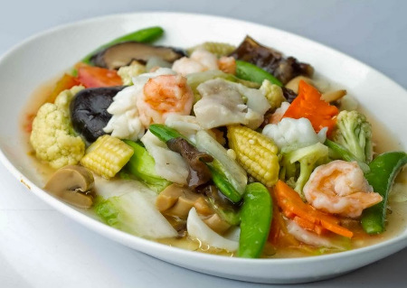

Capcay

Description
This Indonesian food is mainly influenced by the Chinese Cuisine. It is actually Chinese-Indonesian food. A
stirred fry delicious smokey vegs! You'll love it and it is has nice umami taste!
Cook it! Taste it! Eat it! Repeat!
Ingredients
Serving for 4-5 people
- 2 chicken fillet
- 3 carrots, skinned and thinly sliced
- chopped broccoli
- chopped cauliflower
- white cabbage/white Chinese cabbage/bak choy
- 3 cloves of garlic, minced
- 1 small onion, chopped
- 1 1/2 tablespoon oyster sauce
- 1 tablespoon tomato ketchup
- 1/2 teaspoon pepper powder
- 1/2 tablespoon salt (1/2 cube of chicken bouillon)
- 1 tablespoon sesame oil
- 1 teaspoon sugar
- 700-800ml water or chicken broth
- 2-3 tablespoons corn starch or flour, mixed with 1 tablespoon of water
Steps
- Heat the vegetable oil in a large saucepan over medium heat. Saute the onion and garlic for few minutes then
add the chicken, stir 2-3 minutes. Pour the water/chicken broth, season with salt (or chicken bouillon),
pepper, sugar, sesame oil and cook for 10 minutes.
- Add the vegetables, spring onion, oyster sauce, tomato ketchup, then cover, and cook until the vegetables
are tender, about 10 or 15 minutes.
- Add in corn starch (or flour mixture with 2-3 tablespoons of water and stir until the sauce is thickened.
- Remove from the heat and serve immediately with warm steamed rice and other dishes.
Going up!
Take me Home!